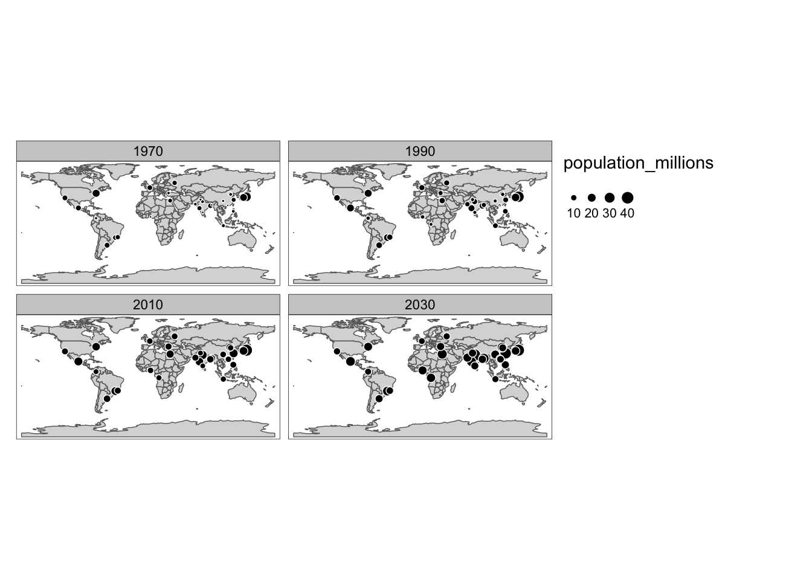

Thursday, September 29, 2022
Today
Inferential statistics: How to apply common statistical tests in R and how to understand their meaning using graphs.
- One-sample test for the value of the population mean
- Graphical inference
- Two-sample test for a difference in population means
- A non-parametric test for difference in population means
- Paired observations
- Chi-squared test for independence
This lesson marks a departure from the earlier lessons. You will continue to learn how to code in R, but you will do it in the context of statistical thinking, analysis, and modeling.
I find statistics to be a natural extension to how I think about the world, but I realize this comes with experience and may not come natural to you.
The process of drawing conclusions about a population from a sample of data is called inference. Formally referred to as inferential statistics and it is a foundation of data science.
Two approaches: frequentist (standard practice) and Bayesian. Standard practice relies on disproving a research claim that is NOT of interest.
The research claim you want to disprove is called the null hypothesis. For instance, to show that one medical treatment is better than another treatment, you first assume that the two treatments lead to equal survival rates. You then proceed to disprove this null hypothesis with data. Often the other treatment is a placebo (sugar pill).
To show that the climate is getting warmer, you first assume that it is not getting warmer. You then proceed trying to disprove this hypothesis.
Q: What is the difference between the medical treatment example and the climate change example?
One-sample test for the value of the population mean
Oftentimes interest lies in the mean value (from a population of all values) being different than some prescribed value \(M\). So the null hypothesis (what you want to disprove) is that the population mean equals \(M\).
Using textbook notation the test is written as \[ \hbox{H}_0: \mu = M \\ \hbox{H}_A: \mu \neq M \] where H sub naught (\(\hbox{H}_0\)) is the null hypothesis stating that the unknown population mean (\(\mu\)) equals a specific value \(M\) and where H sub A (\(\hbox{H}_A\)) is the alternative hypothesis stating that the unknown population mean does equal \(M\).
For example, given a sample of FSU students where heights are measured in centimeters, you test the hypothesis that the mean height of all students at FSU (the population) is 183 cm (6 feet).
You should start by plotting the data together with the hypothesis. Here first create a data frame using the vector of heights and number the students from 1 to n using the sequence operator :.
ht <- c(177, 180, 179, 174, 192, 186, 165, 183)
ht.df <- data.frame(Student = 1:length(ht),
Height = ht)Then use ggplot() to make a box plot and add the hypothesized mean as a layer with the geom_hline() function and the data values as layer with the geom_point() function.
library(ggplot2)
ggplot(data = ht.df,
mapping = aes(x = "", y = ht)) +
geom_boxplot() +
geom_point(color = "blue") +
ylab("Height (cm)") + xlab("") +
geom_hline(aes(yintercept = 183), color = "red") +
scale_y_continuous(limits = c(150, 200)) +
theme_minimal()
mean(ht)## [1] 179.5The median height in our sample is less than 180 cm (thick black line) and the hypothesized mean (red line) is within the interquartile range.
You write the test as: \[ \hbox{H}_0: \mu = 183 \\ \hbox{H}_A: \mu \neq 183 \]
You test the hypothesis that the mean height in the population is 183 cm with the t.test() function. The first argument is the data vector (not a data frame) and the second argument is the hypothesized mean (mu =).
t.test(ht,
mu = 183)##
## One Sample t-test
##
## data: ht
## t = -1.2239, df = 7, p-value = 0.2606
## alternative hypothesis: true mean is not equal to 183
## 95 percent confidence interval:
## 172.7376 186.2624
## sample estimates:
## mean of x
## 179.5Where do these values come from and how do you interpret them?
The output includes the \(t\) value (-1.2239). The \(t\) value (or \(t\) statistic) is computed as \[ t = \frac{\bar x - M}{s/\sqrt{n}} \] where \(\bar x\) is the sample mean, \(M\) is the hypothesized value, \(s\) is the standard deviation and \(n\) is the sample size.
In code the \(t\) value is
(mean(ht) - 183) / (sd(ht) / sqrt(length(ht)))## [1] -1.223853The output also includes the degrees of freedom (7). The degrees of freedom on the \(t\) value is the sample size minus one. There are eight student heights (sample size is 8) so df = 7.
The degrees of freedom (dof, df) is a term that indicates the number of values in the calculation of a statistic that are ‘free’ to vary. Suppose you know the mean value of a set of numbers (say the mean value is 24). Further, suppose you know how many numbers were used to calculate this mean (say there were five) but you don’t know what the five values were.
Now you ask, what values could the five numbers be so that the mean is 24? With a few moments thought you will conclude that four of them could be any value at all, but the fifth one is constrained so that the mean value equals 24.
Thus the mean is a statistic with n-1 degrees of freedom.
The output also includes the sample mean. The sample mean height of 179.5 cm is shorter than the hypothesized height of 183 cm. But, with only eight values, this amount of “shortness” does not provide you with enough evidence to reject the null hypothesis that the population height is 183 cm. So you conclude by stating that you fail to reject the null hypothesis.
The \(p\)-value which quantifies the evidence in support of the null hypothesis. The smaller the \(p\)-value the less support there is for the null hypothesis. The \(p\)-value is the area under the \(t\) distribution curve to left of the \(t\) value (lower quantile value).
pt(q = -1.2239, df = 7) * 2## [1] 0.2605821The pt() function is the cumulative distribution function for the \(t\) distribution. The degrees of freedom is the parameter so you need to include that as the df = argument.
You multiply this probability by 2 because your alternative hypothesis is two-sided (not equal to \(M\)).
The output provides a 95% uncertainty interval about the sample mean. It includes the hypothesized mean height of 183 cm.
The uncertainty (confidence) interval is a statistic that tells you how much uncertainty there is in using the sample mean as an estimate for the population mean. You conclude that, based on the sample of eight students, your best estimate for the mean height of all students at FSU is 179.5 cm with a 95% uncertainty interval that ranges from 172.7 to 186.3 cm.
A \(p\)-value is an estimate of the probability that your data, or data more extreme than observed, could occur by chance if the null hypothesis is true. A small \(p\)-value tells you that the data is unusual with respect to the particular null hypothesis.
Interpretation of the \(p\)-value is stated as evidence AGAINST the null hypothesis. This is because interest lies in the null hypothesis being untenable.
| \(p\)-value | Statement of evidence against the null |
|---|---|
| less than .01 | convincing |
| .01 - .05 | moderate |
| .05 - .15 | suggestive, but inconclusive |
| greater than .15 | no |
The \(p\)-value comes from the pt() function, which determines the area under the \(t\) distribution curve to the left of a particular value. The curve is obtained using the dt() function (density function).
For example, to plot the \(t\) distribution curve and the \(t\) value from our hypothesis above you type
curve(dt(x, 7), from = -3, to = 3, lwd = 2)
abline(v = -1.2239, col = 'red')
abline(v = 1.2239, col = 'red')
The area under the curve to the left of -1.2239 is
pt(q = -1.2239,
df = 7)## [1] 0.130291So 13% of the area lies to the left of the first red line. The distribution is symmetric so 13% of the area lies to the right of the second red line. With a two-sided test you add these two fractions to get the \(p\)-value.
pt(q = -1.2239, df = 7) + pt(q = 1.2239, df = 7, lower.tail = FALSE)## [1] 0.2605821Example: Strongest Atlantic hurricanes
Are hurricanes getting stronger? Let’s say you know that the strongest hurricanes in the past have an average minimum pressure of 915 mb. Lower central pressure means a stronger hurricane.
Suppose you collect data on the strength of hurricanes over the period 1980-2017.
Names <- c("Allen", "Gloria", "Gilbert", "Hugo", "Opal", "Mitch", "Isabel", "Ivan", "Katrina", "Rita", "Wilma", "Dean", "Irma", "Maria")
Year <- c(1980, 1985, 1988, 1989, 1995, 1998, 2003, 2004, 2005, 2005, 2005, 2007, 2017, 2017)
minP <- c(899, 919, 888, 918, 916, 905, 915, 910, 902, 895, 882, 905, 914, 908)
hur.df <- data.frame(Year, Names, minP, Basin = "A")You are interested in whether these recent Atlantic hurricanes since 1980 have an average minimum pressure less than 915 mb. So this is our alternative hypothesis.
Your null hypothesis is that the average minimum pressure (\(\mu\)) is 915 mb or higher and the alternative hypothesis is that it is less than 915.
Formally, you write the statistical test as \[ \hbox{H}_0: \mu \ge 915 \\ \hbox{H}_A: \mu \lt 915 \]
Start with a plot.
ggplot(hur.df,
mapping = aes(x = "", y = minP)) +
geom_boxplot() +
geom_point(color = "blue") +
ylab("Minimum Pressure (mb)") + xlab("") +
geom_hline(aes(yintercept = 915), color = "red") +
scale_y_continuous() +
theme_minimal()
mean(hur.df$minP)## [1] 905.4286You see that the data support your idea (hypothesis) that recent hurricanes have, on average, pressures below 915 mb.
You formally test the hypothesis with the t.test() function. The first argument is the data values as a vector (here hur.df$minP), the second argument is the hypothesized mean, and the alternative = argument is set to "less" because that is your alternative hypothesis.
t.test(hur.df$minP,
mu = 915,
alternative = "less")##
## One Sample t-test
##
## data: hur.df$minP
## t = -3.1679, df = 13, p-value = 0.003706
## alternative hypothesis: true mean is less than 915
## 95 percent confidence interval:
## -Inf 910.7792
## sample estimates:
## mean of x
## 905.4286Here you summarize/conclude as follows: The sample mean intensity of the recent hurricanes is 905.4 mb, which is less than 915 mb by a difference of about 10 mb.
Given this amount of difference (the effect size) together with a sample size of 14, you conclude there is convincing evidence that, on average, the strongest hurricanes since 1980 are stronger than those in the past.
Graphical inference
Applying a \(t\) test is an example of statistical inference. You draw conclusions about the population from the sample of data. This is why statistics is useful: you don’t want your conclusions to apply only to a sample. You want them to apply to the population at large.
There are two parts: Testing (is there a difference?) and estimation (how big is the difference?). Is there a difference is visual. “Is what you see really there?” More precisely, is what you see in a plot of the sample an accurate reflection of the entire population?
For example, generate samples with the hypothesized mean value. Then see how these samples compare with our data.
rnorm(n = 8,
mean = 183,
sd = sd(ht))## [1] 191.5521 185.9609 174.7002 191.6241 189.5957 182.1216 179.0626 183.0548Consider the situation where you try to ‘find’ your data from a lineup of plots generated from ‘fake’ data under the null hypothesis. By ‘find’ I mean determine which plot corresponds to your data.
The functions in the {nullabor} package generate data sets and plots under various null hypotheses through permutation or simulation.
The nullabor::null_dist() function is used to create another function with arguments var = that specifies the name of the column in our data frame containing the data values of interest, dist = that specifies what type of distribution you assume for your data (here ‘normal’) and params = as a list of the mean and standard deviation of your data.
The function null_dist() generates another function based on your null hypothesis. In this case a normal distribution for the variable Height (in the data frame ht.df) centered on 183 with a standard deviation equal to the standard deviation of the sample (ht).
fun <- nullabor::null_dist(var = "Height",
dist = 'normal',
params = list(mean = 183,
sd = sd(ht)))The magic happens when you use the lineup() function that takes as it’s arguments the saved function (here fun) and the true data frame (here ht.df) and returns a data frame in long format (here assigned to the object dfL).
dfL <- nullabor::lineup(method = fun,
true = ht.df)## decrypt("CLg7 X161 sO bJws6sJO vH")head(dfL)## Student Height .sample
## 1 1 192.3907 1
## 2 2 177.1609 1
## 3 3 171.3312 1
## 4 4 169.5355 1
## 5 5 178.3207 1
## 6 6 189.9504 1tail(dfL)## Student Height .sample
## 147 3 168.6288 20
## 148 4 199.3645 20
## 149 5 184.3624 20
## 150 6 183.4669 20
## 151 7 185.5285 20
## 152 8 189.2463 20The data frame contains the random null heights and the observed heights. The heights are listed in the column name Height and by default there are 20 samples each indicated by a number in the column labeled .sample.
The output contains an encryption key that hides the sample number corresponding to the observed heights.
You know how to plot side-by-side using the facet_wrap() function so you can try to visually pick out the observed heights.
ggplot(data = dfL,
mapping = aes(x = "", y = Height)) +
geom_boxplot() +
facet_wrap(~ .sample, nrow = 1, ncol = 20) +
theme_minimal()
Can you pick out the actual data? A plot of the real data is hidden amount the 19 ‘fake’ data. The fakes are plots of data generated from the null hypothesis. If you can spot the real data, then there is evidence that your data is different from the null hypothesis.
With a null hypothesis stating that the mean height is 183 cm, the evidence is weak that the data is different. So you fail to reject the null.
Suppose the null hypothesis states that the mean height is 190 cm. Retest with the new null hypothesis.
t.test(ht,
mu = 190)##
## One Sample t-test
##
## data: ht
## t = -3.6716, df = 7, p-value = 0.007948
## alternative hypothesis: true mean is not equal to 190
## 95 percent confidence interval:
## 172.7376 186.2624
## sample estimates:
## mean of x
## 179.5In this case, the sample of students looks unusual (they are too short) if the true height is 190 cm. The \(p\)-value is reduced to .008.
The uncertainty interval does not change. The uncertainty interval is about the sample as an estimate of the unknown population mean regardless of what you think the mean is.
The value of 190 lies outside the uncertainty interval consistent with a small \(p\) value.
Repeat the graphical lineup but this time with a hypothesized mean of 190 cm.
fun <- nullabor::null_dist(var = "Height",
dist = 'normal',
params = list(mean = 190, sd = sd(ht)))
inf <- nullabor::lineup(fun, ht.df)## decrypt("CLg7 X161 sO bJws6sJO qZ")ggplot(data = inf,
mapping = aes(x = "", y = Height)) +
geom_boxplot() +
facet_wrap(~ .sample, nrow = 1, ncol = 20) +
theme_minimal()
In this case it is easier to pick out the actual data. And this ability to pick out the actual data corresponds with a lower \(p\)-value.
The idea of comparing your actual data to a set of data generated under a null hypothesis is a fundamental idea of statistics.
Said another way: you have data and want to use it to say something about the world. You do this by comparing your data with data under other possible realities (hypotheticals–“what if?” or counterfactuals).
The possible realities are generated with computer code using statistical distributions or resampling methods.
Graphical inference can be used in a variety of applications. Here is an example from my tornado research. Here the innocent is a spatially random distribution of genesis. Can you pick out the actual data?
{kind=link}
More information on the {nullabor} package here
Two-sample test for a difference in population means
With two samples of data the null hypothesis is often that the two samples have the same population mean where you assume both samples can be adequately described with normal distributions.
You test the null hypothesis that the two samples have the same population mean by computing the \(t\) value. In this case, the \(t\) value is the difference in sample means divided by the standard error of the difference in means (SEDM).
There are two ways to calculate SEDM.
Assume equal variance: use the pooled standard deviation (\(s\)). Under the null hypothesis, the \(t\) value will follow a \(t\) distribution with n1 + n2 - 2 degrees of freedom (df).
Don’t assume equal variances (this is the default assumption). Under the null hypothesis, the \(t\) statistic approximates a \(t\) distribution. In this case it is called the Welch procedure and the degrees of freedom is not an integer.
Usually the methods give similar results unless group sizes and variances are widely different across the two samples.
Example: hurricanes occurring in the North Atlantic and the eastern North Pacific
Are hurricanes that occur over the eastern North Pacific weaker (or stronger) than those that occur over the Atlantic? Let’s look at the evidence.
You add the data from the Pacific to the data frame hur.df by making a similar data frame and then using the rbind() function to combine them.
Names <- c("Trudy", "Gilma", "Olivia", "Guillermo", "Linda", "Juliette", "Elida", "Hernan", "Kenna", "Ioke", "Rick", "Celia", "Marie", "Odile", "Patricia", "Lane", "Walaka")
Year <- c(1990, 1994, 1994, 1997, 1997, 2001, 2002, 2002, 2002, 2006, 2009, 2010, 2014, 2014, 2015, 2018, 2018)
minP <- c(924, 920, 923, 919, 902, 923, 921, 921, 913, 915, 906, 921, 918, 918, 872, 922, 920)
df <- data.frame(Year, Names, minP, Basin = "P")
hur.df <- rbind(hur.df, df)You start with a lineup of plots where you shuffle (permute) the minimum pressures between the basins multiple times. This is done with the nullabor::null_permute() function identifying what column to permute.
fun <- nullabor::null_permute("Basin")
inf <- nullabor::lineup(fun, hur.df, n = 12)## decrypt("CLg7 X161 sO bJws6sJO vk")ggplot(data = inf,
mapping = aes(x = Basin, y = minP, color = Basin)) +
geom_boxplot() +
facet_wrap(~ .sample)
Based on these plots, what do you anticipate the conclusion will be when you formalize this with a \(t\) test? Asking yourself what you expect the result will be before performing statistical tests is a good strategy to guard against interpreting non-sensical results.
Let \(\mu_{A}\) be the population mean of Atlantic hurricanes and \(\mu_{P}\) be the population mean of Pacific hurricanes, you formally write the statistical test as \[ \hbox{H}_0: \mu_{A} = \mu_{P} \\ \hbox{H}_A: \mu_{A} \neq \mu_{P} \] You implement the test as follows
t.test(minP ~ Basin,
data = hur.df,
var.equal = TRUE,
alternative = "two.sided")##
## Two Sample t-test
##
## data: minP by Basin
## t = -2.2407, df = 29, p-value = 0.03287
## alternative hypothesis: true difference in means between group A and group P is not equal to 0
## 95 percent confidence interval:
## -18.6455942 -0.8502041
## sample estimates:
## mean in group A mean in group P
## 905.4286 915.1765You write a summary and conclusion as follows: “The sample mean intensity of Atlantic hurricanes is 905.4 mb and the sample mean intensity of the Pacific hurricanes is 915.2 mb. Given this amount of difference (the effect size) together with a sample size of 29, you conclude there is moderate evidence that the mean hurricane intensity in the Atlantic is different than the mean hurricane intensity of the Pacific with the difference in the direction of stronger (lower pressures) hurricanes in the Atlantic on average.”
Example: Palmer penguins
Let \(A\) be the length of Adelie penguin flippers and \(C\) be the length of Chinstrap penguin flippers. Then you formally write the statistical test as
\[ \hbox{H}_0: \mu_{A} = \mu_{C} \\ \hbox{H}_A: \mu_{A} \lt \mu_{C} \]
The data set to test this one-sided hypothesis is available as part of the {palmerpenguins} package.
library(palmerpenguins)
head(penguins)## # A tibble: 6 × 8
## species island bill_length_mm bill_depth_mm flipper_l…¹ body_…² sex year
## <fct> <fct> <dbl> <dbl> <int> <int> <fct> <int>
## 1 Adelie Torgersen 39.1 18.7 181 3750 male 2007
## 2 Adelie Torgersen 39.5 17.4 186 3800 fema… 2007
## 3 Adelie Torgersen 40.3 18 195 3250 fema… 2007
## 4 Adelie Torgersen NA NA NA NA <NA> 2007
## 5 Adelie Torgersen 36.7 19.3 193 3450 fema… 2007
## 6 Adelie Torgersen 39.3 20.6 190 3650 male 2007
## # … with abbreviated variable names ¹flipper_length_mm, ²body_mass_gRemove the rows corresponding to the larger Gentoo penguins.
penguins <- penguins |>
dplyr::filter(species != "Gentoo")ggplot(data = penguins,
mapping = aes(x = species, y = flipper_length_mm)) +
geom_boxplot(mapping = aes(color = species),
width = .3, show.legend = FALSE) +
geom_jitter(mapping = aes(color = species),
alpha = .5, show.legend = FALSE,
position = position_jitter(width = 0.2, seed = 0)) +
scale_color_manual(values = c("darkorange","purple")) +
labs(x = "Species", y = "Flipper length (mm)") +
theme_minimal()## Warning: Removed 1 rows containing non-finite values (stat_boxplot).## Warning: Removed 1 rows containing missing values (geom_point).
You see that Adelie penguins have shorter flippers than Chinstrap penguins on average, but there is substantial variability from one individual penguin to another.
Again you start with a lineup of plots where you permute flipper length between the species.
fun <- nullabor::null_permute("species")
inf <- nullabor::lineup(fun, penguins, n = 12)## decrypt("CLg7 X161 sO bJws6sJO v5")ggplot(data = inf,
mapping = aes(x = species,
color = species,
y = flipper_length_mm)) +
geom_boxplot() +
scale_color_manual(values = c("darkorange","purple")) +
facet_wrap(~ .sample)## Warning: Removed 12 rows containing non-finite values (stat_boxplot).
What do you anticipate you will conclude when you formalize this with a \(t\) test?
t.test(flipper_length_mm ~ species,
data = penguins,
var.equal = TRUE,
alternative = "less")##
## Two Sample t-test
##
## data: flipper_length_mm by species
## t = -5.974, df = 217, p-value = 4.689e-09
## alternative hypothesis: true difference in means between group Adelie and group Chinstrap is less than 0
## 95 percent confidence interval:
## -Inf -4.246781
## sample estimates:
## mean in group Adelie mean in group Chinstrap
## 189.9536 195.8235What do you write in your summary and conclusions?
Adelie penguins in the sample have a mean flipper length of 190 mm, which is shorter than the mean flipper length of the Chinstrap penguins by about 6 mm. Given a sample size of 218 penguins this difference provides convincing evidence against the null hypothesis that population mean flipper length is the same (or longer) for the Chinstrap penguins.
In the test above you assumed that the variability among penguins is the same regardless of species (var.equal = TRUE).
You check this assumption by computing the variance by species.
penguins |>
dplyr::group_by(species) |>
dplyr::summarize(varFL = var(flipper_length_mm, na.rm = TRUE))## # A tibble: 2 × 2
## species varFL
## <fct> <dbl>
## 1 Adelie 42.8
## 2 Chinstrap 50.9There is less variance in flipper length for the sample of Adelie penguins compared with the variance in flipper length for the sample of Chinstrap penguins. But is this difference significant?
The ratio of the two variances is about .84.
You formally test with the var.test() function under the null hypothesis that the ratio of the two variances is equal to 1.
var.test(flipper_length_mm ~ species,
data = penguins)##
## F test to compare two variances
##
## data: flipper_length_mm by species
## F = 0.84076, num df = 150, denom df = 67, p-value = 0.3854
## alternative hypothesis: true ratio of variances is not equal to 1
## 95 percent confidence interval:
## 0.5489336 1.2465576
## sample estimates:
## ratio of variances
## 0.8407631The output shows that the ratio of the variances is .8407. Under the null hypothesis that the true ratio is 1 the ratio follows an F distribution with 150 and 67 degrees of freedom which gives a two-sided \(p\)-value of .3854. This is why it is sometimes called the ‘F-test’.
Thus you conclude there is no statistical evidence of a difference in the variability in flipper length between the two species.
The uncertainty interval includes the value of 1 and is quite wide.
This variance test is sensitive to small departures from a normal distribution and it is based on the assumption that the groups are independent. It should not be applied in the setting where the data are paired.
The t.test() and var.test() functions are in the {stats} package as part of the base install of R.
The {ctest} package contains all the “classical tests,” and has several alternative tests for variance homogeneity, each with its own assumptions, benefits, and drawbacks.
A non-parameteric test for difference in population means
You can avoid the distributional assumption (assume data have a normal distribution) by using a non-parametric test. The non-parametric alternative is the Wilcoxon test (aka Mann-Whitney U test).
The test statistic ‘W’ is the sum of the ranks in the first group minus the sum of the ranks in the second. It is obtained with the wilcox.test() function.
For example, is there evidence of more or fewer U.S. hurricanes recently? One way to examine this question is to divide the time period into two samples and compare the means from both samples.
loc <- "http://myweb.fsu.edu/jelsner/temp/data/US.txt"
LH.df <- read.table(loc,
header = TRUE)You consider the first half of the record as separate from the second half and ask is there a difference in hurricane counts between the two halves. The null hypothesis is that the sample means are the same.
First create a vector that divides the record length in two equal parts.
early <- LH.df$Year <= median(LH.df$Year)
head(early); tail(early)## [1] TRUE TRUE TRUE TRUE TRUE TRUE## [1] FALSE FALSE FALSE FALSE FALSE FALSEThen use the test on the U.S. hurricane counts where the explanatory variable is the vector early.
t.test(LH.df$All ~ early)##
## Welch Two Sample t-test
##
## data: LH.df$All by early
## t = -0.59291, df = 162.53, p-value = 0.5541
## alternative hypothesis: true difference in means between group FALSE and group TRUE is not equal to 0
## 95 percent confidence interval:
## -0.5739157 0.3088554
## sample estimates:
## mean in group FALSE mean in group TRUE
## 1.60241 1.73494The \(p\)-value is large (> .15) so you fail to reject the null hypothesis of no difference in mean number of hurricanes between the earlier and the later periods.
The 95% uncertainty interval is centered the difference in means. Since the interval contains zero, there is no evidence against the null hypothesis.
Since there are 160 years in the record (length(LH.df$All)) you take the first 80 years for the first sample (s1) and the next 80 years for the second sample (s2) and then perform the test. Try it now.
s1 <- LH.df$All[early]
s2 <- LH.df$All[!early]Small counts are not described very well by a normal distribution.
ggplot(data = LH.df,
mapping = aes(factor(All))) +
geom_bar() +
ylab("Number of Years") +
xlab("Number of Hurricanes")
So you use the non-parametric Wilcoxon test instead.
wilcox.test(s1, s2)##
## Wilcoxon rank sum test with continuity correction
##
## data: s1 and s2
## W = 3592.5, p-value = 0.6239
## alternative hypothesis: true location shift is not equal to 0The \(p\) value again exceeds .15 so your conclusion is the same. The average number of hurricanes during the second half of the record is statistically indistinguishable from the average number of hurricanes during the first half of the record.
Paired observations
In cases where the observations come in pairs you can ‘control’ for individual variation by doing a paired \(t\) test.
Example: A shoe manufacturer makes two different materials (A and B). A sample of 10 kids try both materials. Wear times (in months) are recorded for each material. You want to know if one material is more resistant to wear.
So you test if there is a difference in shoe material wear times. You start by creating a long data frame from the recorded wear times.
matA <- c(14, 8.8, 11.2, 14.2, 11.8, 6.4, 9.8, 11.3, 9.3, 13.6)
matB <- c(13.2, 8.2, 10.9, 14.3, 10.7, 6.6, 9.5, 10.8, 8.8, 13.3)
df <- data.frame(Kid = rep(1:10, 2),
Material = c(rep("A", 10), rep("B", 10)),
Wear = c(matA, matB))You then plot the wear times.
( p <- ggplot(df, aes(x = Material, y = Wear, color = Material)) +
geom_boxplot() +
geom_point() +
scale_color_manual(values = c("#1F78B4", "#A6CEE3")) )
Wear times range from less than 7 months to more than 14 months. But there does not appear to be a significant difference in wear times between material A and B.
On average, material A wears longer than material B (11 months versus 10.6 months) but the difference is small relative to the individual wear times. Thus, as expected when you run a \(t\) test on these two samples you find a large \(p\)-value.
t.test(matA, matB,
alternative = "two.sided")##
## Welch Two Sample t-test
##
## data: matA and matB
## t = 0.36891, df = 17.987, p-value = 0.7165
## alternative hypothesis: true difference in means is not equal to 0
## 95 percent confidence interval:
## -1.925046 2.745046
## sample estimates:
## mean of x mean of y
## 11.04 10.63You add a line layer to the plot where you group the points on the graph by Kid.
p + geom_line(mapping = aes(group = Kid), color = "black")
This shows material A wears longer in 8 of the 10 kids (most of the connecting lines slope downward toward material B).
In this case since there is a grouping variable you use the paired = TRUE argument in the \(t\) test.
t.test(matA, matB,
paired = TRUE,
alternative = "two.sided")##
## Paired t-test
##
## data: matA and matB
## t = 3.3489, df = 9, p-value = 0.008539
## alternative hypothesis: true mean difference is not equal to 0
## 95 percent confidence interval:
## 0.1330461 0.6869539
## sample estimates:
## mean difference
## 0.41Now you find a \(p\)-value less than .01 so you conclude there is a significant difference in wear times between the two materials. More precisely you state that there is compelling evidence against the hypothesis of no difference in wear times.
Effectively the paired test is a one-sample test where the hypothesized mean difference is zero. To see this create a new vector as the difference in wear times.
( df <- data.frame(matA, matB) |>
dplyr::mutate(Diff = matA - matB,
Kid = 1:10) )## matA matB Diff Kid
## 1 14.0 13.2 0.8 1
## 2 8.8 8.2 0.6 2
## 3 11.2 10.9 0.3 3
## 4 14.2 14.3 -0.1 4
## 5 11.8 10.7 1.1 5
## 6 6.4 6.6 -0.2 6
## 7 9.8 9.5 0.3 7
## 8 11.3 10.8 0.5 8
## 9 9.3 8.8 0.5 9
## 10 13.6 13.3 0.3 10Then use the one-sample version of the \(t\) test with mu = 0.
t.test(df$Diff,
mu = 0,
alternative = "two.sided")##
## One Sample t-test
##
## data: df$Diff
## t = 3.3489, df = 9, p-value = 0.008539
## alternative hypothesis: true mean is not equal to 0
## 95 percent confidence interval:
## 0.1330461 0.6869539
## sample estimates:
## mean of x
## 0.41Example of how I would proceed in practice: Reaction time while driving.
Cell phone use while driving is believed to increase the chance of an accident due to slowed reaction time. The data set reaction.time in the package {UsingR} gives the time it takes to react to an external event while driving by various groups.
df <- UsingR::reaction.time
str(df)## 'data.frame': 60 obs. of 4 variables:
## $ age : Factor w/ 2 levels "16-24","25+": 1 1 1 1 1 1 1 1 1 1 ...
## $ gender : Factor w/ 2 levels "F","M": 1 2 2 1 2 2 2 1 1 2 ...
## $ control: Factor w/ 2 levels "C","T": 2 2 2 2 2 1 2 2 2 1 ...
## $ time : num 1.36 1.47 1.51 1.39 1.38 ...The variable time is the reaction time in seconds. This is the response variable (the variable you are interested in). The factor variable control has two groups ‘C’ control (not using cell phone) and ‘T’ (using cell). The observations are not paired. The data set is in the long format.
Suppose I was asked to test the hypothesis that, on average, reaction time is shorter for those not using a cell phone.
Here is my workflow:
I would start by computing the mean for each group (C: control and T: phone user) from the sample of data I have.
df |>
dplyr::group_by(control) |>
dplyr::summarize(mean(time),
sd(time))## # A tibble: 2 × 3
## control `mean(time)` `sd(time)`
## <fct> <dbl> <dbl>
## 1 C 1.39 0.100
## 2 T 1.45 0.0747I note that the control group has a shorter reaction time than the phone-user group, on average. If this was not the case I would be finished concluding that the sample of data provides no evidence in support of the hypothesis.
Second I note that the difference in means is 6 hundredths of a second. And the standard deviations are of nearly the same magnitude as the difference in means.
Third I plot the response variable (time) conditional on the control variable.
ggplot(data = df,
mapping = aes(x = control, y = time)) +
geom_boxplot() +
geom_point() +
scale_x_discrete(labels = c("No Cell Phone Use", "Cell Phone Use")) +
xlab("") + ylab("Reaction Time (s)")
Fourth I note the median reaction time for the control group (no cell phone use) is shorter and the interquartile ranges overlap. This tells me a statistical test is needed.
Fifth I note both distributions are approximately symmetric about the median so I am safe to use a \(t\) test.
Sixth I note the variability in reaction times for the two groups is about the same.
The null hypothesis is that there is no difference in reaction times. Here the alternative is that the reaction time is shorter for those not using a phone.
I use the model syntax: response ~ explanatory as the first argument in the t.test() function. I include an argument that names the data frame where the columns time and control are located. Here the argument alternative = 'less' is used.
t.test(time ~ control,
data = df,
var.equal = TRUE,
alternative = 'less')##
## Two Sample t-test
##
## data: time by control
## t = -2.4329, df = 58, p-value = 0.009041
## alternative hypothesis: true difference in means between group C and group T is less than 0
## 95 percent confidence interval:
## -Inf -0.01751153
## sample estimates:
## mean in group C mean in group T
## 1.389613 1.445571The evidence in support of the null hypothesis that the reaction times are the same in the population is summarized by the \(p\)-value. The \(p\)-value is .009, so I conclude there is convincing evidence indicating cell phone use slows reaction times.
The adjective ‘convincing’ comes from the following table: \(p\)-value as evidence against the null hypothesis.
less than 0.01: convincing
0.01-0.05: moderate
0.05-0.15: suggestive, but inconclusive
greater than 0.15: noChi-squared test for independence
This test is used when you have two categorical variables from a single population. It determines whether there is a significant association between the two variables.
For example, in an election survey, voters might be classified by male or female and voting preference (Democrat, Republican, or Independent). You use a chi-squared test for independence to determine whether sex is related to voting preference.
The test is appropriate when the sampling method is random, the variables under study are each categorical, and the expected frequency count for each cell of the table is at least five.
The hypothesis is: \[ \hbox{H}_0: \hbox{Variable A and Variable B are independent}\\ \hbox{H}_A: \hbox{Variable A and Variable B are not independent} \]
The alternative hypothesis is that knowing the level of A can help us predict the level of B. Support for the alternative hypothesis does not imply causality.
The test statistic is a chi-squared random variable defined by \[ \chi^2 = \sum_{r = 1}^{n_r} \sum_{c = 1}^{n_c} \frac{(O_{r,c} - E_{r,c})^2}{E_{r,c}} \] where \(O_{r,c}\) is the observed frequency count at level \(r\) of variable A and level \(c\) of variable B, and \(E_{r,c}\) is the corresponding expected frequency count, where \[ E_{r,c} = \frac{n_r \times n_c}{n} \] where \(n_r\) is the total number of sample observations of variable A and \(n_c\) is the total number of sample observations of variable B, and \(n\) is the total sample size.
Example: Smoking and exercise
In the data set survey ({MASS} package), the Smoke column records the students smoking habit, while the Exer column records their exercise level. The allowed values in Smoke are “Heavy”, “Regul” (regularly), “Occas” (occasionally) and “Never”. As for Exer, they are “Freq” (frequently), “Some” and “None”.
You tally the students smoking habits against their exercise levels with the table() function.
library(MASS)
( SH.tbl <- table(survey$Smoke, survey$Exer) )##
## Freq None Some
## Heavy 7 1 3
## Never 87 18 84
## Occas 12 3 4
## Regul 9 1 7The result is called a contingency table of the two variables. Values for the level of exercise are in the columns and values for the level of smoking are in the rows.
You test the hypothesis of whether student smoking levels are independent of their exercise level using
chisq.test(SH.tbl)## Warning in chisq.test(SH.tbl): Chi-squared approximation may be incorrect##
## Pearson's Chi-squared test
##
## data: SH.tbl
## X-squared = 5.4885, df = 6, p-value = 0.4828You find a large \(p\)-value (greater than .15) and fail to reject the null hypothesis of independence.
The warning message tells us that some of counts are less than 5.
In the case where some of the counts have fewer than five cases it is better to use Fisher’s exact test.
fisher.test(SH.tbl)##
## Fisher's Exact Test for Count Data
##
## data: SH.tbl
## p-value = 0.4138
## alternative hypothesis: two.sided